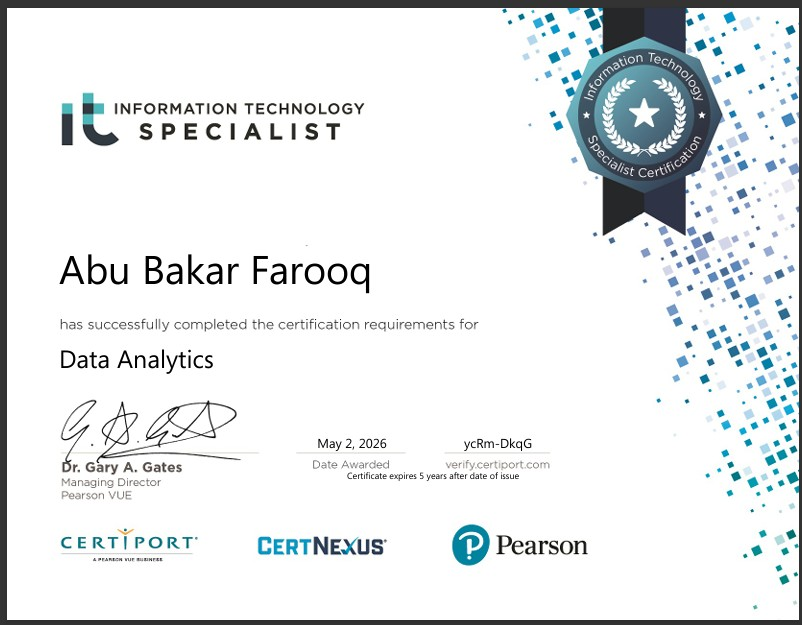
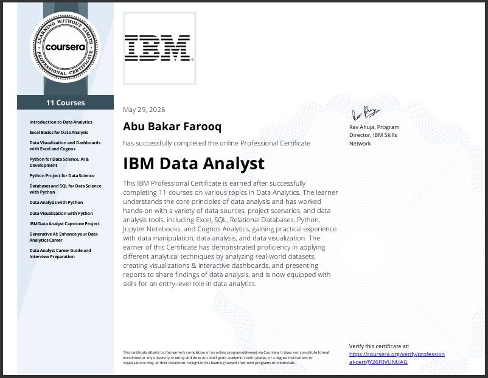
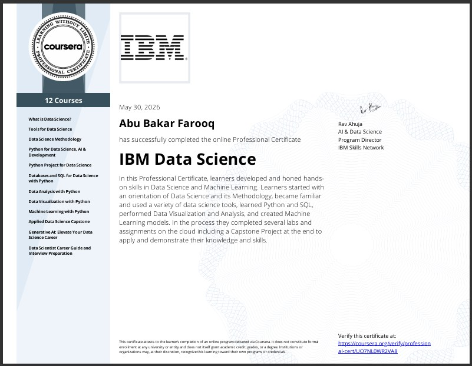
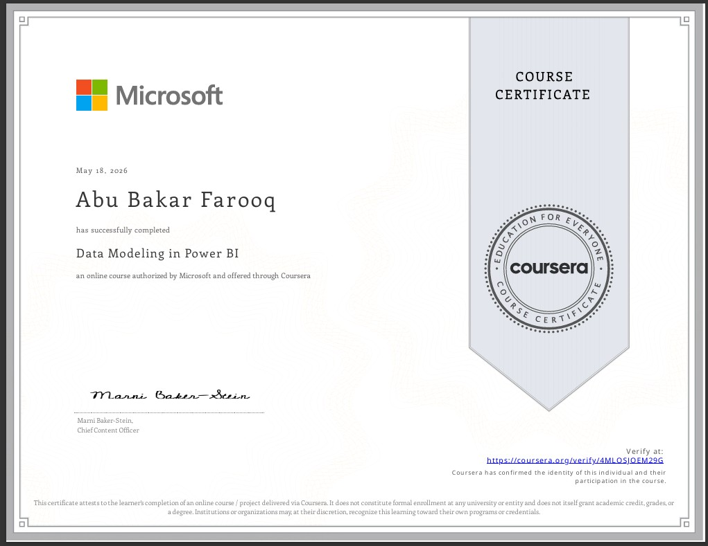

Data Analytics
Learned core data analysis techniques including data cleaning, reporting, analytics thinking, visualization, and practical business analysis workflows using Excel and Python.
Professional Certification

IBM Data Analyst
Worked with Excel, SQL, Python, Jupyter Notebook, dashboards, data visualization and real-world datasets.
Analytics Professional

IBM Data Science
Covered Machine Learning, Python, Data Science methodology, SQL, Visualization, Capstone Projects, and Generative AI.
Data Science Track

Data Modeling in Power BI
Built advanced Power BI reports, data modeling, relationships, interactive dashboards and DAX logic.
Business Intelligence

Cisco CCST
Networking fundamentals, hardware support, IT troubleshooting and technical support practices.
Support Technician